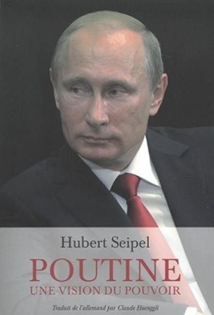

Certes nous préférerions devoir ne penser qu’à l’amitié, qu’à la paix. Cependant nécessité, réalisme, perspicacité, realpolitik nous contraignent non pas à désigner arbitrairement nos ennemis, et ainsi œuvrer en faveur de la guerre, mais à savoir qui sont ceux qui nous désignent comme leurs ataviques ennemis. « Il vous faut un ennemi » disait un chauffeur de taxi newyorkais à Umberto Eco1. Non pour le plaisir de la testostérone mais parce que, selon l’adage romain si vis pacem para bellum, si tu veux la paix, prépare la guerre. Ainsi Alexandre del Valle établit avec clairvoyance qui sont Les Vrais ennemis de l’Occident, l’Islam en son entier, plutôt que la Russie, coiffée par un Poutine dont Hubert Seipel nous propose une vision du pouvoir en forme de plaidoirie raisonnée. Ce pourquoi il nous paraît que l’OTAN doive considérablement évoluer et changer son fusil d’épaule.
La thèse d’Alexandre del Valle est aussi évidente que judicieuse : depuis la chute pacifique du communisme et l’éclatement de l’Union soviétique, la Russie, fût-elle incarnée par Poutine, n’est plus l’empire du mal, alors que l’hydre de l’Islam l’a, de manière plus sidérante, remplacé. Aussi plutôt que d’errer, selon son sous-titre, « du rejet de la Russie à l’islamisation des sociétés ouvertes » (on devine le concept de Karl Popper), les Etats-Unis et l’Occident, Europe en tête et au premier chef l’Allemagne et la France, doivent impérativement prendre conscience qu’une alliance avec Moscou est non seulement judicieuse mais vitale, face à cet arbre du terrorisme cachant la forêt de l’Islam totalitaire2. La démonstration est en deux temps : d’abord un réquisitoire fort documenté, d’une implacable précision à l’encontre de l’Islam ; ensuite un plaidoyer en faveur de la Russie.
Alexandre del Valle se livre à un vaste dévoilement du financement et du prosélytisme - planétaires et opiniâtres - du projet d’islamisation ; ce par l’invasion conjointe d’une charia apparemment pacifique et du terrorisme guerrier, directement pilotés par l’Arabie saoudite, le Qatar, le Koweït, mais aussi la Turquie et le Pakistan. Ce sont des milliards de dollars qui s’écoulent depuis les pétromonarchies pour payer des imams, pour financer la construction de milliers de mosquées, le plus souvent salafistes, ou émanant des Frères musulmans, des Etats-Unis à Rome, de l’Andalousie à l’Indonésie, de l’Australie aux Pays-Bas, de la Norvège au Nigéria, sans oublier, ajouterons-nous, Poitiers, pour venger la défaite devant Charles Martel en 732.
Et sans négliger les écoles coraniques, les centres culturels, les associations, qui œuvrent dans la dissimulation et la manipulation politique, de façon à instituer « un ordre social islamique » et à réaliser la « conquête politico-spirituelle du monde »…
Non content de cette énumération aussi perspicace et référencée qu’effrayante et pléthorique, notre essayiste, par ailleurs Docteur en Histoire contemporaine et professeur de géopolitique et de relations internationales, montre - s’il était besoin - en quoi cette entreprise de conquête religieuse, de djihad et de soumission, trouve son origine dans le Coran lui-même, citations de versets et sourates haineux, violents, criminogènes à l’appui3, et dans toute la tradition de la jurisprudence musulmane, y compris la plus contemporaine, invalidant la fiction selon laquelle l’islamisme ne serait qu’une lecture fondamentaliste et partielle des textes fondateurs et canoniques ; jusqu’au trop fameux Al-Hallal wal-Haram (Le Licite et l’illicite en Islam) du téléprédicateur Youssef Al-Qaradâwî4. Il faut alors, aux prises avec les manifestations explicitement liberticides du phénomène et les « sources théologiques de la violence théocratique légale », ne pas craindre de parler avec Del Valle, de « vision totalitaire », telle que définie par Hanna Arendt5.
Ainsi « les alliés sunnites de l’Amérique sont responsables du financement d’Al-Qaïda et de Daech, notamment la Turquie, l’Arabie saoudite, le Qatar et le Koweït », appuie Alexandre del Valle. Que faire sinon proposer aux Etats-Unis de dénoncer le pacte du Quincy (« pétrole contre sécurité ») conclu en 1945 avec l’Arabie saoudite et renouvelé en 2005 pour soixante ans, l’or noir étant désormais ailleurs. Car, de facto, le royaume wahhabite est un irréconciliable ennemi de Washington et des démocraties occidentales, elles-mêmes empêtrées par des investissements considérables de la part de ce tonneau des danaïdes de l’Islam, y compris en France, conjointement avec le Qatar, dans le domaine hôtels de luxe, des clubs de football, des entreprises aussi stratégiques qu’EADS, pervers investissements que nos gouvernements encouragent par d’éhontés privilèges fiscaux que n’ont pas les Français.
En ce domaine l’on se rend compte, mais avec retard, que les Etats-Unis n’ont pas fait preuve d’une réelle connaissance de l’Islam, tant ils ont joué les moudjahidines afghans contre l’Union soviétique (« quinze milliards de dollars d’assistance militaire »), tant ils ont nourri les réseaux du « muslim belt » à l’origine de l’attentat du 11 septembre, tant ils ont contribué au noyautage islamique dans l’ex-Yougoslavie, tant ils ont fait exploser le relatif verrou qu’était Saddam Hussein en Irak, sans compter l’aveuglement français qui acheva un Kadhafi pour laisser place au chaos et à la poudrière en Libye, et enfin, tant Barack Obama et Hillary Clinton furent notoirement des islamophiles invétérés. Ce qui revient à parler d’« une folie géopolitique », en l’occurrence de « l’alignement sur les puissances sunnites et [du] refus des propositions russes », la Russie défendant autant les Serbes de Milosevic, pour le moins complices de génocide, que la Syrie de Bachar el-Assad, qui eut le tort de libérer des combattants du Califat islamique, si imparfaits soient-ils.
En ce sens, les Etats-Unis, et l’Europe en leur sillage, ont continué à penser la Russie comme la créature et clone de l’Union soviétique. Ils ont persisté à privilégier la gestion des voies du pétrole moyen-oriental plutôt que le réel « choc des civilisations », pour reprendre le concept d’Huntington6, même si ce dernier y voyait un antagonisme chrétienté Islam (parmi huit civilisations dans le monde), alors qu’il faut y voir un irréductible antagonisme entre obscurantisme totalitaire et sociétés ouvertes du libéralisme et les Lumières
En conséquence, et conformément à l’esprit d’Alexandre del Valle, oserait-on ici proposer une nouvelle et nécessaire orientation de l’OTAN ?
D’une part, si cet organisme s’est étendu vers l’Europe centrale, de la Pologne jusqu’aux pays Baltes - ce qui fut ressenti par la Russie comme une humiliation - il s’agit, plutôt que de pousser l’Ukraine intrinsèquement russe à l’intégrer, de proposer à la Russie même une intégration à un OTAN repensé en fonction des nouveaux déséquilibres planétaires.
Or, en 1994, puis 1997, Poutine avait ratifié le Partenariat pour la paix de l’OTAN, processus que les ingérences occidentales en Géorgie, Ukraine, Kosovo, sans oublier l’obsession anti Bachar el-Assad ont dangereusement interrompu. Ceci permettrait de contractuellement protéger le destin des pays Baltes, guère menacés, la Russie ayant d’autres chats à fouetter, entre le trouble duo ukrainien et biélorusse et les républiques islamistes de la fédération sur son flanc caucasien. D’autre part, il est évident que la Turquie, dont Alexandre del Valle, dans un précédent essai7, pointait avec pertinence les dérives et exactions (colonisation de la Chypre du nord, menace sur les Arméniens, évacuation des Chrétiens, contentieux au sujet des îles grecques et dérive islamiste d’Erdogan), n’a plus rien à faire dans l’OTAN. Les Etats-Unis, qui ne l’ont qu’à demi compris en évacuant subrepticement leur base stratégique d’Incirlik, ne peuvent que se séparer d’un état dictatorial dont les complicités avec non seulement le terrorisme islamique, mais avec l’islamisation militante de nos sociétés sont avérées.
Mais qui est ce Vladimir Poutine dont nous pensons qu’il mérite d’avoir l’amitié des démocraties libérales ? L’autocrate à la main de fer aux multiples mandats présidentiels, l’ancien du KGB, le viriloïde affiché qui réprouve, voire réprime l’homosexualité de ses concitoyens, sinon les journalistes et ses sujets pourtant en immense majorité satisfaits de sa prestation et des progrès économiques ? « Plus libéral que l’on croit », affirme Alexandre del Valle. Il est pourtant honni par la bien-pensance américano-occidentale, soit qu’elle n’a pu se départir de l’aversion anticommuniste et des réflexes de la guerre froide, soit que l’islamogauchisme le trouve trop orthodoxe à son goût.
La réponse est-elle chez Hubert Seipel : « Poutine, une vision du pouvoir » En un essai d’abord passablement erratique, le journaliste allemand, fort bien en cour à Moscou, tisse un volume pas toujours efficace, avec des bribes de récits, d’entretiens, des pages sur l’avion de Malaysia Airlines abattu au-dessus de l’Ukraine, sans que l’on sache quel maladroit ou provocateur en est l’auteur. Mais après une petite centaine de pages, l’essai prend son rythme de croisière, devient résolument efficace, croisant la biographie de Poutine avec l’exercice de son pouvoir, au cœur des stratégies internationales.
Le jeune politicien, issu d’un milieu modeste de Saint-Pétersbourg, puis des services secrets, efficace, discret, devient premier ministre d’Elstine qui en fait son successeur. Devenu Président, Poutine conduit la réunification des Églises russes, engage une loi sur l’enregistrement des financements étrangers pour tout organisme, institue un impôt de 13 % sur les entreprises et combat la fraude fiscale.
Désorganisé par la chute poussiéreuse de l’Union soviétique, par le pillage des ressources et des industries sous la main des oligarques, l’État trouve une légitimité et une efficacité. La population au-dessous du seuil de pauvreté a considérablement décru, l’insécurité est tempérée, la démographie reprend vie. « Poutine », assure à raison Hubert Seipel, « est certainement tout sauf communiste ».
Si son régime réprime les provocations et exactions des Pussy Riot, il va les gracier en 2013, en même temps que l’oligarque spoliateur Khodokorvski. Certes son interdiction du prosélytisme homosexuel est plus que désastreuse, sans que la liberté sexuelle en soit pour autant menacée, mais il faut noter que la récente répression sévère subie par des homosexuels en Tchétchénie est du fait des autorités musulmanes, même si l’attitude officielle russe n’est guère encourageante. Par ailleurs Poutine peut s’honorer d’avoir accordé l’asile politique à Edward Snowden, qui révéla le scandale des écoutes politiques par les Etats-Unis. On connait la phrase célèbre du maître de Moscou à propos du terrorisme islamiste en Tchétchénie : « poursuivre les terroristes jusque dans les toilettes ».
Hubert Seibel corrobore des assertions d’Alexandre del Valle, en particulier au sujet des financements américains destinés à encourager l’opposition à Poutine lors de sa dernière élection, sans omettre ceux destinés aux rébellions ukrainiennes et géorgiennes. Aussi, lors des désordres ukrainiens, qu'il a sans doute contribué à fomenter en y jetant des troupes russes sans uniforme, et au cours desquels l’Occident effectua de dommageables livraisons d’armes, au bénéfice de la démocratie disait-il, à des rebelles autant attirés par le mirage de l’Union européenne que par des idéologies néo-nazies, Poutine défend-il la population russophone. Il obtient sans peine un rattachement plébiscité et justifié de la Crimée à la Russie.
On comprend alors qu’il proposait une zone de libre-échange avec l’Union Européenne, « de Lisbonne à Vladivostok », combien il fut heurté par le bouclier anti-missiles et les fusées nucléaires de l’OTAN installés en Pologne et en Roumanie. Tout cela, faute de raison américaine et européenne pour aboutir, selon les mots d’Hubert Seipel, à l’actuelle « paix froide ».
Sans illusion sur l’islamisme, tout en sachant que Moscou compte deux millions de musulmans, partageant les valeurs occidentales, Poutine fut également ulcéré par les sanctions économiques occidentales (désastreuses pour les deux parties y compris françaises) suite au bourbier ukrainien envenimé par les ingérences américaines et européennes. Ce pourquoi, au grand dam de nos économies, il préfère se tourner vers des partenariats et de colossaux investissements en direction de la Chine.
Hubert Seipel est-il trop tendre avec son modèle ? En effet, il ne fait guère allusion aux inquiétudes afférentes à la liberté d’expression et de la presse. La Russie est un triste pays où des journalistes sont assassinés, comme Anna Polikovskaïa en 2006, bien connue pour son opposition à Poutine et ses enquêtes sur les réseaux tchétchènes. Ce dernier n’a pas omis d’exiger l’arrestation du coupable, ce qui fut fait. Deux journalistes ont été assassinés en 2017. Des sujets sensibles, comme la corruption, la Tchétchénie, les potentats divers, peuvent valoir de tels sorts à ceux qui se risquent à des investigations cependant nécessaires. Il serait peut-être présomptueux de faire du seul Poutine le levier d’une telle tyrannie…
L’analyse d’Alexandre del Valle est d’une rare complétude, d’une rare pertinence. Même si quelques développements, en particulier sur la question ukrainienne, manquent un peu de concision, même si sa conclusion, « Comment vaincre ou neutraliser nos vrais ennemis », hors des propositions de parfait bon sens contre le salafisme et les Frères musulmans ou la reconquête des quartiers islamisés, s’embourbe un tantinet dans les clichés des énergies renouvelables, certes dans le cadre d’un nécessaire retrait des approvisionnements pétroliers venus de la péninsule arabique. Il n’en reste pas moins que son essai, Les Vrais ennemis de l’Occident. Du rejet de la Russie à l’islamisation des sociétés ouvertes, mériterait d’être enseigné parmi nos institutions, de façon à ce que nos sociétés redeviennent des sociétés ouvertes, selon la définition de Karl Popper. Pour ce faire, et selon ce dernier, il est plus que loisible de cesser de promouvoir l’intolérance au nom de la tolérance. En d’autres termes, l’islam, atavique totalitarisme, doit disparaître du monde des Lumières, sauf comme objet d’analyse, d’Histoire et d’érudition.
Faute de comprendre et de lier un réel dialogue, une vitale collaboration avec ce Poutine dont Hubert Seipel nous livre une autre « vision » que celle des clichés et des éructations médiatiques au petit pied, nous nous privons d’un échange, non seulement économique, mais stratégique et géopolitique aux conséquences historiques et civilisationnelles majeures.
Vous vouliez la paix ; vous aurez la soumission ou la guerre. À moins que, espoir et hypothèse improbables, les jeunes générations musulmanes rejettent le fanatisme de leurs pères et lui préfèrent la liberté, à moins qu’une lame de fond, venue d’une prise de conscience et d’un dégoût d’une telle religion, amplifie chez eux le mouvement de conversion au christianisme ou l’accession à l’athéisme.
T.G.
Bibliographie de référence :
Alexandre del Valle : Les Vrais ennemis de l’Occident. Du rejet de la Russie à l’islamisation des sociétés ouvertes, éd. L’Artilleur, 560 p, 23 €.
Hubert Seipel : Poutine, une vision du pouvoir, traduit de l’allemand par Claude Haenggli, éd. des Syrtes, 360 p, 22 €.
Notes :
1. Voir : Umberto Eco : de la nécessité de l'ennemi et autres embryons occasionnels.
2. Voir : L'arbre du terrorisme et la forêt de l'Islam II.
3. Voir : Du fanatisme morbide islamiste.
4. Youssef Al-Qaradâwî : Al-Hallal wal-Haram (Le Licite et l’illicite en Islam) Al-Qalam, 2004.
5. Voir : Hannah Arendt, de la banalité du mal à la banalité de la culture.
6. Samuel Huntington : Le Choc des civilisations, Odile Jacob, 1997.
7. Alexandre del Valle : La Turquie dans l’Europe. Un cheval de Troie islamiste ? Syrtes, 2004.
Retrouvez tous les articles de notre ami Thierry Guinhut sur son site :
Partager cette page